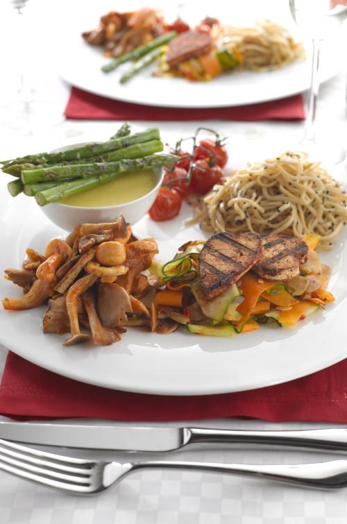

Canoodle with Noodles
The majority of this dinner for two can be prepared ahead of the meal. Simply finish off prior to serving. To serve, place each component of the menu onto two large serving plates.

Ingredients
Tofu Hearts
- 200g firm tofu
- 1 tbsp olive oil
- 1 tbsp lime juice
- 1 tsp soy sauce
- half tsp paprika
- 1 tsp paprika mixed with 2 tsp olive oil
Mixed Mushrooms
- 10g butter or vegan margarine*
- 3 cloves garlic, crushed
- 5cm root ginger, grated
- 250g exotic mixed mushrooms, sliced
- half a tsp paprika
- Remaining tofu strips from the tofu hearts recipe
Noodles
- 70g dried egg noodles or vegan noodles*
- 2 tsp sesame oil
- 1 tsp black sesame seeds
- 1 tbsp lime juice
Asparagus With Hollandaise Sauce
- 100g asparagus, trimmed
- Hollandaise sauce*:
- 3 tbsp white wine vinegar
- 2 egg yolks
- 125g butter or margarine
- Salt and pepper to taste
- 1 tsp lemon juice
Mini Stir Fry
- 1 tbsp sesame oil
- 1 carrot, peeled into ribbons
- 1 courgette, peeled into ribbons
- 1 fresh chilli, chopped
- 1 tbsp lime juice
- 25g flaked almonds
- 2 cloves garlic, crushed
Method
| Tofu Hearts Method: | |
|---|---|
| 1. | Carefully pat the tofu dry with plenty of paper towels. |
| 2. | Slice half a cm across the width. Using a heart shaped cutter, or a steady hand, carefully cut out your tofu heart. Slice the off cuts into strips and cook with the hearts, but use the strips in the mixed mushroom recipe. |
| 3. | Place the tofu in a non-stick frying pan with the olive oil and gently fry for 7 minutes. Don not be tempted to turn the tofu as it will be delicate until cooked. |
| 4. | When crispy turn the tofu over and season with lime juice, soy sauce and paprika. Set to one side. Just prior to serving, dip the hearts into the paprika and oil mixture and place on the griddle pan with the asparagus. To serve, carefully place the tofu hearts on top of the stir fry. |
| Mixed Mushrooms Method: | |
|---|---|
| 1. | Melt the butter then add the garlic. Using your hand, squeeze the grated ginger juice onto the garlic. |
| 2. | Add all of the remaining ingredients and cook for five minutes. |
| Noodles Method: | |
|---|---|
| 1. | Cook the noodles in boiling water, according to packet instructions. Drain and add the remaining ingredients. Reheat just prior to serving. |
| Asparagus With Hollandaise Sauce Method: | |
|---|---|
| 1. | Boil asparagus for 2 minutes. Drain and place in very cold water, to prevent the asparagus from continuing to cook. |
| 2. | Place the vinegar in a pan, heat and reduce by half. Whizz in a food processor with the egg yolks. |
| 3. | Melt the butter over a gentle heat. While the food processor is whizzing slowly add the melted butter. Season with salt, pepper and lemon juice. |
| 4. | Just before serving the meal re-heat the asparagus on a very hot griddle pan or non-stick frying pan for two minutes. Reheat the tofu hearts with the asparagus at the same time |
| 5. | To serve, place hollandaise sauce into a dipping dish and balance the asparagus across the top. |
| Mini Stir Fry Method: | |
|---|---|
| 1. | Heat the oil in a wok, then add all of the ingredients and cook for 3 minutes over a high heat. It is important not to overcook the vegetables in order to retain texture, colour and flavour. |
Give US A Visit.